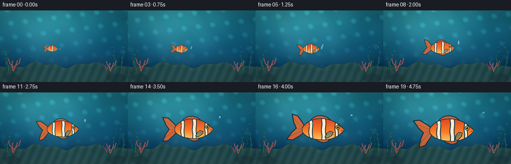
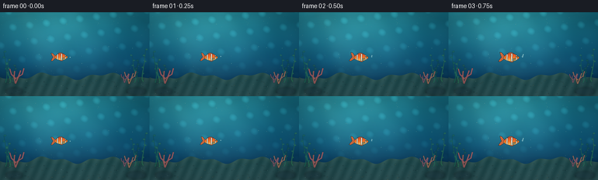
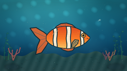

CODING AGENTS AS PIXEL WORLD MODELS
traex/DeepSeek-V4.1-Flash · instance_preservation_0050
点击播放 · 原生 RGB 像素
逐轮保存的候选
回放视频、检查图与代码变化。
每份候选均可单独播放。实际图片检查记录在下方工具轨迹中。
候选 01播放与检查图
点击播放 · 原生 RGB 像素


展开代码变化
--- 上一保存版本
+++ 本次保存版本
@@ -0,0 +1,476 @@
+from __future__ import annotations
+
+import math
+from pathlib import Path
+
+import numpy as np
+from PIL import Image, ImageDraw, ImageFilter
+
+import artifact_io
+
+
+ROOT = Path(__file__).resolve().parent
+WIDTH, HEIGHT = 256, 144
+FRAME_COUNT = 20
+FPS = 4.0
+SS = 4
+RW, RH = WIDTH * SS, HEIGHT * SS
+
+
+def clamp(value: float, low: float = 0.0, high: float = 1.0) -> float:
+ return max(low, min(high, value))
+
+
+def smoothstep(value: float) -> float:
+ value = clamp(value)
+ return value * value * (3.0 - 2.0 * value)
+
+
+def mix(a: tuple[int, int, int], b: tuple[int, int, int], amount: float) -> tuple[int, int, int]:
+ return tuple(round(a[i] + (b[i] - a[i]) * amount) for i in range(3))
+
+
+def rgba_layer() -> Image.Image:
+ return Image.new("RGBA", (RW, RH), (0, 0, 0, 0))
+
+
+def composite_rgba(base: Image.Image, layer: Image.Image) -> Image.Image:
+ return Image.alpha_composite(base.convert("RGBA"), layer).convert("RGB")
+
+
+def draw_soft_shape(
+ layer: Image.Image,
+ points: list[tuple[float, float]],
+ fill: tuple[int, int, int, int],
+ blur: float,
+) -> None:
+ shape = Image.new("RGBA", layer.size, (0, 0, 0, 0))
+ ImageDraw.Draw(shape).polygon(points, fill=fill)
+ layer.alpha_composite(shape.filter(ImageFilter.GaussianBlur(blur)))
+
+
+def make_background(frame_index: int) -> Image.Image:
+ t = frame_index / FPS
+ yy, xx = np.mgrid[0:RH, 0:RW]
+ xn = xx / RW
+ yn = yy / RH
+
+ top = np.array([20, 112, 130], dtype=np.float32)
+ middle = np.array([11, 77, 109], dtype=np.float32)
+ bottom = np.array([5, 35, 67], dtype=np.float32)
+ upper_mix = np.clip(yn / 0.58, 0, 1)[..., None]
+ lower_mix = np.clip((yn - 0.58) / 0.42, 0, 1)[..., None]
+ rgb = top * (1 - upper_mix) + middle * upper_mix
+ rgb = rgb * (1 - lower_mix) + bottom * lower_mix
+
+ glow = np.exp(-(((xn - 0.33) / 0.44) ** 2 + ((yn - 0.05) / 0.52) ** 2))
+ rgb += glow[..., None] * np.array([28, 53, 46], dtype=np.float32)
+
+ texture = (
+ 2.8 * np.sin(0.018 * xx + 0.010 * yy + t * 0.55)
+ + 1.8 * np.sin(0.030 * xx - 0.014 * yy - t * 0.32)
+ + 1.2 * np.sin(0.009 * xx + 0.035 * yy + t * 0.20)
+ )
+ rgb += texture[..., None] * np.array([0.42, 0.75, 0.82], dtype=np.float32)
+
+ wave_a = np.sin(0.030 * xx + 0.020 * yy + t * 1.15)
+ wave_b = np.sin(0.023 * xx - 0.035 * yy - t * 0.78)
+ caustic = np.clip((wave_a * wave_b - 0.48) * 1.55, 0, 1)
+ caustic *= np.clip(1.0 - yn / 0.92, 0.18, 1.0)
+ rgb += caustic[..., None] * np.array([18, 48, 48], dtype=np.float32)
+
+ background = Image.fromarray(np.clip(rgb, 0, 255).astype(np.uint8)).convert("RGBA")
+
+ rays = rgba_layer()
+ ray_draw = ImageDraw.Draw(rays)
+ for offset, width, alpha in [(-70, 120, 20), (100, 90, 16), (255, 150, 12)]:
+ top_x = 235 + offset + 22 * math.sin(t * 0.22 + offset)
+ ray_draw.polygon(
+ [
+ (top_x - width * 0.35, -20),
+ (top_x + width * 0.35, -20),
+ (top_x + 330 + width, RH * 0.82),
+ (top_x + 245 - width, RH * 0.82),
+ ],
+ fill=(144, 224, 213, alpha),
+ )
+ rays = rays.filter(ImageFilter.GaussianBlur(34))
+ background = composite_rgba(background, rays)
+
+ surface = rgba_layer()
+ surface_draw = ImageDraw.Draw(surface)
+ for band in range(7):
+ y_base = 22 + band * 10
+ points = []
+ for x in range(-10, RW + 11, 16):
+ y = y_base + 3.2 * math.sin(x * 0.025 + t * 1.6 + band * 0.8)
+ points.append((x, y))
+ surface_draw.line(points, fill=(163, 240, 226, 35 - band * 3), width=max(1, 3 - band // 3))
+ background = composite_rgba(background, surface.filter(ImageFilter.GaussianBlur(2.0)))
+
+ sand_top = 438 + 17 * np.sin(xx[0] * 0.015) + 10 * np.sin(xx[0] * 0.037 + 0.8)
+ sand_mask = yy > sand_top[None, :]
+ sand_base = np.array([34, 77, 77], dtype=np.float32)
+ sand_light = np.array([88, 119, 96], dtype=np.float32)
+ sand = sand_base[None, None, :] * np.ones((RH, RW, 1), dtype=np.float32)
+ sand += (np.sin(xx * 0.09 + yy * 0.04) * 7)[..., None]
+ sand += (np.clip((yy - 440) / 136, 0, 1) * 13)[..., None]
+ sand += (0.20 * np.clip(1 - np.abs(yy - sand_top[None, :]) / 34, 0, 1))[..., None] * (
+ sand_light - sand_base
+ )
+ sand_img = Image.fromarray(np.clip(sand, 0, 255).astype(np.uint8)).convert("RGBA")
+ sand_img.putalpha(Image.fromarray((sand_mask * 255).astype(np.uint8)))
+ background = composite_rgba(background, sand_img)
+
+ seabed = rgba_layer()
+ bed_draw = ImageDraw.Draw(seabed)
+ rng = np.random.default_rng(41)
+ for _ in range(90):
+ x = float(rng.uniform(0, RW))
+ y = float(rng.uniform(462, RH))
+ radius = float(rng.uniform(1.5, 6.5))
+ color = tuple(int(v) for v in rng.choice([(25, 55, 61), (63, 99, 87), (114, 130, 99)]))
+ bed_draw.ellipse((x - radius, y - radius * 0.45, x + radius, y + radius * 0.45), fill=(*color, 90))
+ background = composite_rgba(background, seabed.filter(ImageFilter.GaussianBlur(1.5)))
+
+ flora = rgba_layer()
+ flora_draw = ImageDraw.Draw(flora)
+
+ def kelp(base_x: float, base_y: float, height: float, phase: float, color: tuple[int, int, int]) -> None:
+ previous = (base_x, base_y)
+ for i in range(1, 17):
+ q = i / 16
+ sway = (5 + 11 * q) * math.sin(q * 4.1 + t * 0.9 + phase)
+ x = base_x + sway + 3.2 * math.sin(q * 8.0 + phase)
+ y = base_y - height * q
+ width = max(2, round(9 * (1 - q) + 2))
+ flora_draw.line([previous, (x, y)], fill=(*color, 175), width=width)
+ if i % 3 == 1 and q > 0.2:
+ direction = -1 if (i + int(phase * 10)) % 2 else 1
+ leaf_x = x + direction * (12 + 4 * q)
+ leaf_y = y - 3
+ flora_draw.ellipse(
+ (min(x, leaf_x), leaf_y - 6, max(x, leaf_x), leaf_y + 6),
+ fill=(*color, 145),
+ )
+ previous = (x, y)
+
+ for index, (x, h, phase, color) in enumerate(
+ [
+ (38, 210, 0.2, (29, 111, 92)),
+ (65, 158, 1.8, (51, 132, 92)),
+ (99, 118, 3.1, (36, 98, 85)),
+ (920, 185, 0.9, (40, 118, 96)),
+ (947, 145, 2.5, (24, 92, 82)),
+ (983, 220, 4.2, (48, 128, 91)),
+ ]
+ ):
+ kelp(x, 483 + 5 * math.sin(index), h, phase, color)
+ background = composite_rgba(background, flora.filter(ImageFilter.GaussianBlur(0.8)))
+
+ coral = rgba_layer()
+ coral_draw = ImageDraw.Draw(coral)
+
+ def branch_coral(base: tuple[float, float], scale: float, color: tuple[int, int, int]) -> None:
+ bx, by = base
+ trunks = [
+ [(bx, by), (bx - 8 * scale, by - 36 * scale), (bx - 5 * scale, by - 75 * scale)],
+ [(bx, by), (bx + 18 * scale, by - 42 * scale), (bx + 31 * scale, by - 78 * scale)],
+ [(bx + 5 * scale, by - 28 * scale), (bx - 24 * scale, by - 57 * scale), (bx - 34 * scale, by - 88 * scale)],
+ [(bx + 8 * scale, by - 36 * scale), (bx + 43 * scale, by - 59 * scale), (bx + 52 * scale, by - 92 * scale)],
+ ]
+ for branch in trunks:
+ coral_draw.line(branch, fill=(*color, 190), width=max(3, round(9 * scale)), joint="curve")
+ for p in branch[1:]:
+ r = 4.8 * scale
+ coral_draw.ellipse((p[0] - r, p[1] - r, p[0] + r, p[1] + r), fill=(*color, 190))
+
+ branch_coral((106, 490), 1.10, (207, 104, 101))
+ branch_coral((884, 492), 0.90, (208, 128, 96))
+ branch_coral((852, 485), 0.65, (169, 92, 117))
+ background = composite_rgba(background, coral.filter(ImageFilter.GaussianBlur(1.2)))
+
+ foreground = rgba_layer()
+ fg_draw = ImageDraw.Draw(foreground)
+ fg_draw.ellipse((38, 517, 155, 570), fill=(30, 61, 69, 125))
+ fg_draw.ellipse((864, 516, 1002, 570), fill=(30, 61, 69, 125))
+ foreground = foreground.filter(ImageFilter.GaussianBlur(8))
+ background = composite_rgba(background, foreground)
+
+ motes = rgba_layer()
+ mote_draw = ImageDraw.Draw(motes)
+ mote_rng = np.random.default_rng(1977)
+ for _ in range(115):
+ x0 = float(mote_rng.uniform(4, RW - 4))
+ y0 = float(mote_rng.uniform(12, RH - 12))
+ drift = float(mote_rng.uniform(2.0, 8.0))
+ x = (x0 + drift * t + 2.5 * math.sin(t * 0.7 + y0 * 0.02)) % RW
+ y = y0 + 1.8 * math.sin(t * 0.5 + x0 * 0.015)
+ radius = float(mote_rng.uniform(0.6, 2.2))
+ alpha = int(mote_rng.uniform(28, 92))
+ mote_draw.ellipse((x - radius, y - radius, x + radius, y + radius), fill=(186, 234, 214, alpha))
+ background = composite_rgba(background, motes.filter(ImageFilter.GaussianBlur(0.6)))
+
+ return background
+
+
+def rotate_points(points: list[tuple[float, float]], pivot: tuple[float, float], degrees: float) -> list[tuple[float, float]]:
+ angle = math.radians(degrees)
+ cosine, sine = math.cos(angle), math.sin(angle)
+ px, py = pivot
+ return [
+ (px + (x - px) * cosine - (y - py) * sine, py + (x - px) * sine + (y - py) * cosine)
+ for x, y in points
+ ]
+
+
+def fill_mask_polygon(
+ image: Image.Image,
+ points: list[tuple[float, float]],
+ fill: tuple[int, int, int, int],
+ outline: tuple[int, int, int, int] | None = None,
+ width: int = 0,
+) -> None:
+ draw = ImageDraw.Draw(image)
+ draw.polygon(points, fill=fill)
+ if outline is not None and width > 0:
+ draw.line(points + [points[0]], fill=outline, width=width, joint="curve")
+
+
+def make_fish_sprite(phase: float) -> Image.Image:
+ sprite = Image.new("RGBA", (800, 460), (0, 0, 0, 0))
+ navy = (22, 48, 58, 255)
+ orange_dark = (219, 76, 31, 255)
+ orange = (249, 118, 37, 255)
+ orange_light = (255, 168, 62, 255)
+ cream = (255, 238, 203, 255)
+
+ tail_angle = 12.0 * math.sin(phase * math.tau)
+ tail_points = [
+ (263, 197),
+ (224, 151),
+ (151, 83),
+ (82, 76),
+ (121, 170),
+ (164, 230),
+ (121, 291),
+ (82, 384),
+ (151, 377),
+ (224, 309),
+ (263, 263),
+ ]
+ tail_points = rotate_points(tail_points, (263, 230), tail_angle)
+ tail_layer = Image.new("RGBA", sprite.size, (0, 0, 0, 0))
+ fill_mask_polygon(tail_layer, tail_points, (236, 105, 44, 226), navy, 11)
+ tail_draw = ImageDraw.Draw(tail_layer)
+ for end in [(102, 116), (102, 344), (178, 230)]:
+ ray_end = rotate_points([end], (263, 230), tail_angle)[0]
+ tail_draw.line([(260, 230), ray_end], fill=(125, 65, 52, 90), width=4)
+ sprite = Image.alpha_composite(sprite, tail_layer)
+
+ dorsal = [(323, 135), (354, 94), (405, 63), (468, 57), (532, 76), (583, 118), (602, 145)]
+ fill_mask_polygon(sprite, dorsal, (234, 92, 39, 224), navy, 10)
+ dorsal_draw = ImageDraw.Draw(sprite)
+ for end in [(390, 74), (455, 63), (520, 86), (574, 122)]:
+ dorsal_draw.line([(455, 132), end], fill=(121, 59, 48, 80), width=3)
+
+ anal = [(380, 329), (428, 365), (485, 383), (538, 372), (563, 341), (528, 326)]
+ fill_mask_polygon(sprite, anal, (238, 103, 42, 220), navy, 10)
+ anal_draw = ImageDraw.Draw(sprite)
+ for end in [(435, 361), (486, 373), (529, 360)]:
+ anal_draw.line([(472, 329), end], fill=(126, 60, 45, 78), width=3)
+
+ x_profile = np.array([241, 250, 268, 300, 340, 385, 435, 485, 535, 580, 620, 655, 681, 701, 718, 731])
+ half_height = np.array([19, 34, 55, 81, 101, 115, 122, 124, 119, 107, 91, 72, 52, 34, 19, 3])
+ center_y = np.array([231, 230, 228, 225, 222, 221, 221, 222, 224, 226, 228, 230, 231, 231, 230, 228])
+ sample_x = np.linspace(241, 731, 220)
+ sample_half = np.interp(sample_x, x_profile, half_height)
+ kernel = np.exp(-0.5 * (np.linspace(-2.5, 2.5, 13) / 1.2) ** 2)
+ kernel /= kernel.sum()
+ sample_half = np.convolve(np.pad(sample_half, 6, mode="edge"), kernel, mode="valid")
+ sample_center = np.interp(sample_x, x_profile, center_y)
+ top = [(float(x), float(y - h)) for x, y, h in zip(sample_x, sample_center, sample_half)]
+ bottom = [(float(x), float(y + h)) for x, y, h in zip(sample_x, sample_center, sample_half)][::-1]
+ body_points = top + bottom
+
+ body_mask = Image.new("L", sprite.size, 0)
+ ImageDraw.Draw(body_mask).polygon(body_points, fill=255)
+
+ outline_mask = body_mask.filter(ImageFilter.MaxFilter(13))
+ outline_layer = Image.new("RGBA", sprite.size, (0, 0, 0, 0))
+ outline_layer.putalpha(outline_mask)
+ outline_solid = Image.new("RGBA", sprite.size, navy)
+ outline_solid.putalpha(outline_mask)
+ sprite = Image.alpha_composite(sprite, outline_solid)
+
+ yy = np.arange(460, dtype=np.float32)[:, None]
+ body_gradient = np.zeros((460, 800, 4), dtype=np.uint8)
+ q = np.clip((yy - 102) / 252, 0, 1)
+ top_color = np.array([224, 77, 31], dtype=np.float32)
+ mid_color = np.array([253, 124, 37], dtype=np.float32)
+ belly_color = np.array([255, 207, 103], dtype=np.float32)
+ blend1 = np.clip(q / 0.55, 0, 1)
+ blend2 = np.clip((q - 0.55) / 0.45, 0, 1)
+ grad = top_color[None, None, :] * (1 - blend1[..., None]) + mid_color[None, None, :] * blend1[..., None]
+ grad = grad * (1 - blend2[..., None]) + belly_color[None, None, :] * blend2[..., None]
+ body_gradient[..., :3] = np.clip(grad, 0, 255).astype(np.uint8)
+ body_gradient[..., 3] = 255
+ body_fill = Image.fromarray(body_gradient)
+ body_fill.putalpha(body_mask)
+ sprite = Image.alpha_composite(sprite, body_fill)
+
+ stripe_layer = Image.new("RGBA", sprite.size, (0, 0, 0, 0))
+ stripe_draw = ImageDraw.Draw(stripe_layer)
+ for cx, width, phase_shift in [(340, 42, 0.4), (493, 48, 1.2), (647, 36, 2.3)]:
+ left_edge = []
+ right_edge = []
+ for y in range(95, 357, 6):
+ wobble_l = 3.5 * math.sin(y * 0.042 + phase_shift)
+ wobble_r = 3.0 * math.sin(y * 0.039 + phase_shift + 0.8)
+ left_edge.append((cx - width / 2 + wobble_l, y))
+ right_edge.append((cx + width / 2 + wobble_r, y))
+ stripe_points = left_edge + right_edge[::-1]
+ fill_mask_polygon(stripe_layer, stripe_points, (255, 241, 213, 248), (24, 57, 66, 255), 10)
+ stripe_layer.putalpha(Image.composite(stripe_layer.getchannel("A"), Image.new("L", sprite.size, 0), body_mask))
+ sprite = Image.alpha_composite(sprite, stripe_layer)
+
+ texture = Image.new("RGBA", sprite.size, (0, 0, 0, 0))
+ texture_draw = ImageDraw.Draw(texture)
+ for row, y in enumerate(range(146, 324, 25)):
+ for col, x in enumerate(range(270 + (row % 2) * 13, 704, 27)):
+ r = 9
+ texture_draw.arc((x - r, y - r, x + r, y + r), 205, 335, fill=(128, 66, 35, 45), width=2)
+ texture.putalpha(Image.composite(texture.getchannel("A"), Image.new("L", sprite.size, 0), body_mask))
+ sprite = Image.alpha_composite(sprite, texture)
+
+ gill = Image.new("RGBA", sprite.size, (0, 0, 0, 0))
+ gill_draw = ImageDraw.Draw(gill)
+ gill_draw.arc((570, 164, 636, 292), 70, 116, fill=(119, 57, 35, 100), width=5)
+ gill_draw.arc((570, 164, 636, 292), 250, 292, fill=(255, 202, 105, 65), width=3)
+ sprite = Image.alpha_composite(sprite, gill)
+
+ eye_layer = Image.new("RGBA", sprite.size, (0, 0, 0, 0))
+ eye_draw = ImageDraw.Draw(eye_layer)
+ ex, ey = 660, 198
+ eye_draw.ellipse((ex - 27, ey - 27, ex + 27, ey + 27), fill=(20, 40, 48, 255))
+ eye_draw.ellipse((ex - 21, ey - 21, ex + 21, ey + 21), fill=(245, 174, 65, 255))
+ eye_draw.ellipse((ex - 12, ey - 13, ex + 12, ey + 13), fill=(9, 15, 19, 255))
+ eye_draw.ellipse((ex - 8, ey - 10, ex - 1, ey - 2), fill=(255, 255, 239, 245))
+ eye_draw.ellipse((ex + 3, ey + 3, ex + 7, ey + 7), fill=(213, 240, 223, 170))
+ sprite = Image.alpha_composite(sprite, eye_layer)
+
+ face = Image.new("RGBA", sprite.size, (0, 0, 0, 0))
+ face_draw = ImageDraw.Draw(face)
+ face_draw.line([(698, 233), (721, 239)], fill=(45, 46, 43, 220), width=6)
+ face_draw.arc((691, 228, 723, 252), 15, 85, fill=(255, 196, 103, 125), width=3)
+ sprite = Image.alpha_composite(sprite, face)
+
+ pectoral_angle = 9.0 * math.sin(phase * math.tau + 0.75)
+ pectoral = [(565, 247), (530, 278), (515, 327), (550, 331), (593, 294), (606, 257)]
+ pectoral = rotate_points(pectoral, (580, 259), pectoral_angle)
+ fill_mask_polygon(sprite, pectoral, (255, 172, 65, 175), navy, 8)
+ pectoral_draw = ImageDraw.Draw(sprite)
+ for end in [(530, 294), (527, 317), (556, 319), (582, 288)]:
+ ray_end = rotate_points([end], (580, 259), pectoral_angle)[0]
+ pectoral_draw.line([(578, 260), ray_end], fill=(124, 65, 42, 92), width=3)
+
+ highlight = Image.new("RGBA", sprite.size, (0, 0, 0, 0))
+ hdraw = ImageDraw.Draw(highlight)
+ hdraw.arc((300, 121, 645, 306), 191, 236, fill=(255, 238, 180, 105), width=13)
+ highlight.putalpha(Image.composite(highlight.getchannel("A"), Image.new("L", sprite.size, 0), body_mask))
+ highlight = highlight.filter(ImageFilter.GaussianBlur(3))
+ sprite = Image.alpha_composite(sprite, highlight)
+
+ return sprite
+
+
+def add_bubble(frame: Image.Image, x: float, y: float, radius: float, alpha: int) -> None:
+ layer = rgba_layer()
+ draw = ImageDraw.Draw(layer)
+ cx, cy = x * SS, y * SS
+ r = radius * SS
+ draw.ellipse((cx - r, cy - r, cx + r, cy + r), fill=(166, 231, 221, alpha // 3))
+ draw.ellipse(
+ (cx - r, cy - r, cx + r, cy + r),
+ outline=(207, 250, 239, alpha),
+ width=max(1, round(0.7 * SS)),
+ )
+ draw.arc(
+ (cx - r * 0.65, cy - r * 0.70, cx + r * 0.20, cy + r * 0.10),
+ 195,
+ 285,
+ fill=(255, 255, 247, min(255, alpha + 20)),
+ width=max(1, round(0.8 * SS)),
+ )
+ frame.alpha_composite(layer)
+
+
+def render_frames() -> list[np.ndarray]:
+ sprites = [make_fish_sprite(i / 8) for i in range(8)]
+ frames: list[np.ndarray] = []
+
+ for index in range(FRAME_COUNT):
+ t = index / FPS
+ progress = index / (FRAME_COUNT - 1)
+ growth = 0.06 + 0.94 * smoothstep(progress)
+ fish_width = 22.0 + 86.0 * growth
+ fish_height = fish_width * 0.565
+ center_x = 103.0 + 27.0 * smoothstep(progress) + 1.2 * math.sin(t * 0.9)
+ center_y = 76.0 + 2.0 * math.sin(t * 1.35 + 0.5)
+
+ background = make_background(index).convert("RGBA")
+ phase_index = int(round((index * 1.15) % 8)) % 8
+ sprite = sprites[phase_index]
+ # The sprite includes transparent margins. Keep the visual fish centered.
+ scale = fish_width * SS / 610.0
+ target_size = (max(8, round(800 * scale)), max(8, round(460 * scale)))
+ sprite = sprite.resize(target_size, Image.Resampling.LANCZOS)
+
+ paste_x = round(center_x * SS - target_size[0] * 0.55)
+ paste_y = round(center_y * SS - target_size[1] * 0.50)
+ background.alpha_composite(sprite, (paste_x, paste_y))
+
+ bubble_layer = background
+ bubble_origin_x = center_x + fish_width * 0.52
+ bubble_origin_y = center_y + fish_height * 0.02
+ for bubble_index in range(5):
+ birth = (index + 20 - bubble_index * 3.1) / FPS
+ age = t - (bubble_index * 0.27)
+ if age < 0:
+ continue
+ bx = bubble_origin_x + 3.0 + age * (2.0 + bubble_index * 0.35) + 1.2 * math.sin(age * 2.7 + bubble_index)
+ by = bubble_origin_y - age * (7.5 + bubble_index * 0.7)
+ if by < 7:
+ continue
+ add_bubble(
+ bubble_layer,
+ bx,
+ by,
+ 0.75 + bubble_index * 0.22,
+ max(35, 145 - int(age * 17)),
+ )
+
+ array = np.asarray(background.convert("RGB"), dtype=np.float32)
+ yy, xx = np.mgrid[0:RH, 0:RW]
+ vignette = 1.0 - 0.24 * np.clip(
+ ((xx / RW - 0.5) ** 2 / 0.42 + (yy / RH - 0.5) ** 2 / 0.32),
+ 0,
+ 1,
+ )
+ array *= vignette[..., None]
+ array[..., 2] += 3.0
+ image = Image.fromarray(np.clip(array, 0, 255).astype(np.uint8), "RGB")
+ image = image.resize((WIDTH, HEIGHT), Image.Resampling.LANCZOS)
+ frames.append(np.asarray(image, dtype=np.uint8))
+
+ return frames
+
+
+def main() -> None:
+ frames = render_frames()
+ artifact_io.save(frames, ROOT)
+ print(f"saved {len(frames)} frames to {ROOT}")
+
+
+if __name__ == "__main__":
+ main()
可观测工具轨迹
实际执行的命令与返回图片。
命令 1exit 0
/bin/bash -c "pwd && rg --files -g '"'!node_modules'"' -g '"'!vendor'"' | sed -n '1,160p'"
命令 2exit 0
/bin/bash -c "sed -n '1,240p' GENERATION_RULES.md"
命令 3exit 0
/bin/bash -c "cat prompt.txt && printf '\\n--- task_spec.json ---\\n' && cat task_spec.json"
命令 4exit 0
/bin/bash -c "find . -maxdepth 3 -type f -printf '%p\\n' | sort | sed -n '1,240p'"
命令 5exit 0
/bin/bash -c "sed -n '1,260p' artifact_io.py"
命令 6exit 0
/bin/bash -c "sed -n '1,260p' player_template.html"
命令 7exit 0
/bin/bash -c "python - <<'PY' import importlib.util for m in ['numpy','PIL','cv2','scipy','imageio','matplotlib']: print(m, bool(importlib.util.find_spec(m))) PY"
命令 8exit 1
/bin/bash -c 'python generate.py'
命令 9exit 0
/bin/bash -c 'python generate.py'
命令 10exit 0
/bin/bash -c "python - <<'PY'
from pathlib import Path
import json
import numpy as np
from PIL import Image
root=Path('.')
frames=sorted((root/'frames').glob('*.png'))
print('frame_files',len(frames))
print('first_size',Image.open(frames[0]).size,'last_size',Image.open(frames[-1]).size)
with np.load(root/'pixels.npz') as data:
print('pixels_shape',data['pixels'].shape,'pixels_dtype',data['pixels'].dtype)
print('index_bytes',(root/'index.html').stat().st_size)
print('spec',json.loads((root/'task_spec.json').read_text()))
PY"命令 11exit 0
/bin/bash -c 'git status --short 2>/dev/null || true'
视觉工具实际返回图片 1

视觉工具实际返回图片 2

视觉工具实际返回图片 3

保存候选 1 份；完成命令 11 次；可验证图片返回 3 张。原始 API 响应与完整日志保留在本地。